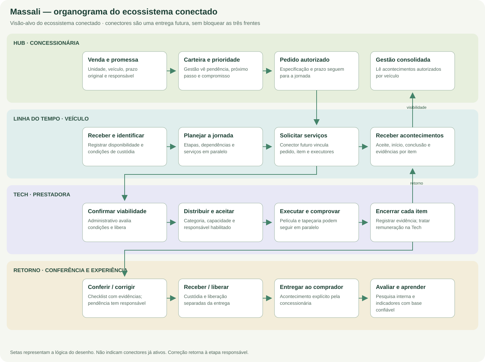

Conexão futura entre as três frentes
O contrato do produto inteiramente conectado: responsabilidades, identidade, acontecimentos, evidências e confiabilidade.


Finalidade e fronteiras
A conexão deve fazer cada público entender o mesmo serviço sem obrigar todos a operar o sistema do outro. Cada frente permanece dona de seus dados e ações. O Hub lê a carteira e os compromissos; a Linha do Tempo organiza etapas, custódia, conferência e entrega; a Tech administra execução e efeitos comerciais/financeiros. Não se propõe copiar bancos nem permitir que dois sistemas reescrevam livremente o mesmo estado.
Identidades e correspondência
O vínculo entre sistemas deve conservar o identificador original de grupo, concessionária, operadora, veículo, jornada, serviço, agendamento e item. Uma tabela de correspondência pode relacionar esses objetos e suas versões. O chassi é informação de conferência; o mesmo veículo pode retornar em outro atendimento, por isso ele não deve ser a única identidade do ciclo.
| Objeto | Regra de identidade |
|---|---|
| Grupo e unidade | Escopo validado no servidor em cada lado; marca não autoriza acesso. |
| Veículo e jornada | Veículo pode ter mais de um ciclo; não misturar prazo de um atendimento com outro. |
| Serviço e item | Vínculo estável entre solicitação e execução; nomes de produtos podem mudar. |
| Evidência | Referência privada ao item correto, com ator, horário e regra de acesso. |
| Evento | ID único e correlação; repetir recebimento não repete o efeito de negócio. |
Catálogo semântico de acontecimentos
| Acontecimento proposto | Origem | Consequência permitida |
|---|---|---|
| Serviço solicitado | Linha do Tempo / origem autorizada | Abrir pendência de resposta; não declarar execução. |
| Pedido confirmado | Administrativo Tech | Registrar condições aceitas e prazo; não aceitar em nome do executor. |
| Serviço aceito | Tech / executor | Responsável assumido; início ainda pode aguardar disponibilidade. |
| Serviço iniciado | Tech / executor | Registrar início real e referências exigidas. |
| Serviço concluído | Tech / executor | Concluir o item correspondente, sem encerrar outros itens. |
| Evidência registrada | Domínio que produziu a evidência | Disponibilizar referência autorizada, sem aprovar automaticamente. |
| Correção solicitada | Responsável pela conferência | Abrir pendência vinculada e revisar a liberação. |
| Veículo recebido | Recebedor de custódia | Registrar recebimento e condição; não marcar entrega ao comprador. |
| Veículo entregue | Concessionária | Encerrar a jornada conforme critérios e habilitar pesquisa definida. |
Envelope e processamento
| Conjunto | Campos e controles propostos |
|---|---|
| Envelope | ID, tipo, versão do evento, origem, instante ocorrido, instante recebido, correlação e versão do registro. |
| Escopo | Grupo, concessionária, operadora e emissor autorizado. |
| Objeto | Veículo, jornada, serviço, agendamento e item correspondentes. |
| Conteúdo | Estado, responsável, prazo aceito, motivo e referência de evidência conforme finalidade. |
| Entrega técnica | Situação do processamento, tentativas, confirmação de recebimento e resultado conhecido/indeterminado. |
| Proteção | Identidade de serviço, credenciais privadas, autorização por vínculo e conteúdo mínimo necessário. |
Persistir o fato de negócio junto da intenção de entrega, usando uma estratégia transacional adequada ao sistema. No destino, registrar identidade e resultado do evento antes de confirmar o processamento. O mecanismo concreto de fila, transporte e autenticação deve ser escolhido após conhecer as interfaces suportadas; este documento não afirma broker ou API de integração já implantados.
Repetição, atraso, falha e correção
- Duplicata: registrar que o evento já foi processado e devolver resultado sem criar tarefa, crédito ou obrigação novamente.
- Fora de ordem: usar versão e estado conhecido; não retroceder uma execução válida porque chegou uma mensagem antiga.
- Resultado indeterminado: conferir a origem e o destino antes de reenviar uma ação com efeito externo.
- Falha temporária: tentativa limitada, atraso progressivo e pendência visível quando exigir intervenção.
- Falha de autorização: negar, registrar metadados necessários e não ampliar escopo automaticamente.
- Correção: vincular ao serviço e à ocorrência anterior, preservar a evidência e reavaliar a conferência.
- Reconciliação: comparar objetos vinculados e versões, sem inventar valores ou sobrescrever a origem.
Privacidade e acesso às evidências
Nem todo evento precisa de nome, telefone, imagem ou valor. A prestadora não recebe a carteira inteira da concessionária por atender um serviço; a concessionária não recebe extratos individuais da prestadora por acompanhar a entrega. Fotos devem permanecer privadas, com finalidade, acesso, retenção e revogação definidos. O portal público publica o modelo e os critérios, não registros do atendimento.
Casos do fluxo conectado
| Caso | O que deve ser demonstrado |
|---|---|
| Película concluída e tapeçaria pendente | Atualização independente dos itens; sem liberação final indevida. |
| Executor aceitou, veículo indisponível | Aceite preservado, execução ainda não iniciada e pendência com responsável. |
| Mesma conclusão recebida duas vezes | Uma mudança de estado e nenhuma repetição financeira. |
| Correção após conferência | Conferência invalidada e nova verificação após a correção. |
| Unidade sem autorização tenta ler evidência | Acesso negado por escopo também no download direto. |
| Pagamento aprovado, transferência não realizada | Obrigação continua aberta; nenhuma saída de caixa inventada. |
| Entrega registrada e pesquisa criada | Entrega e convite são fatos diferentes; mensagem enviada só com confirmação do transporte. |